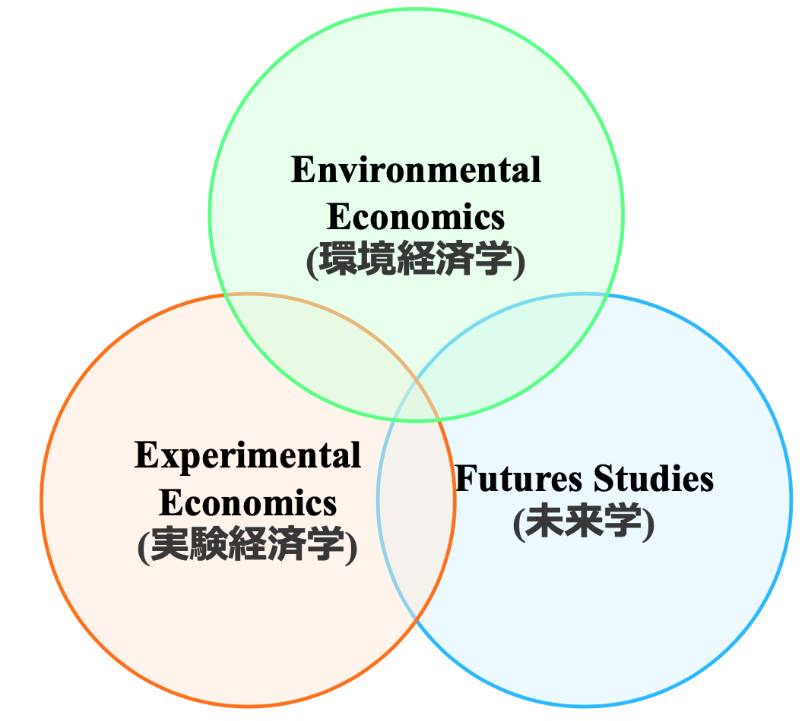
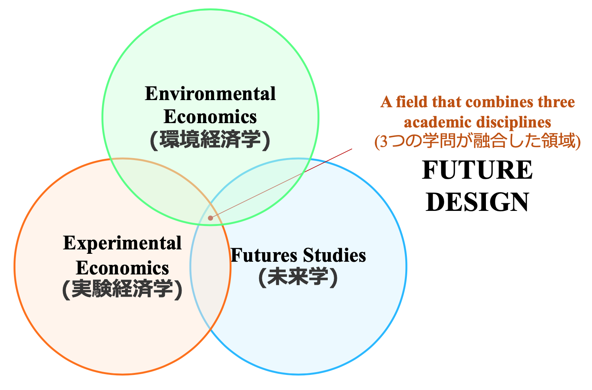
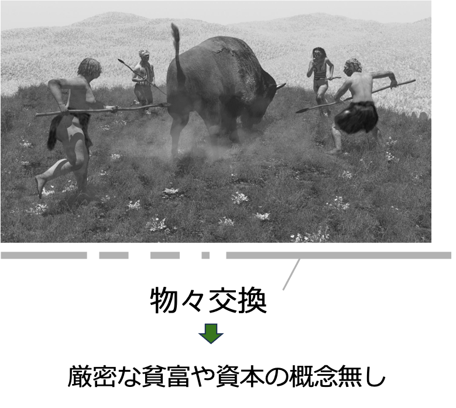
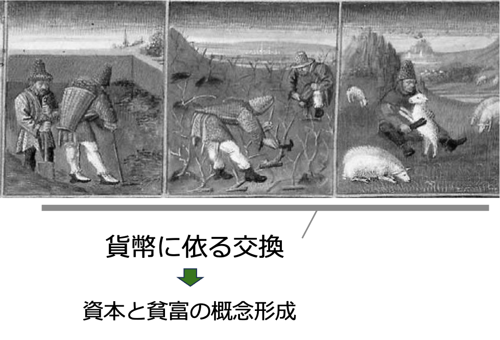
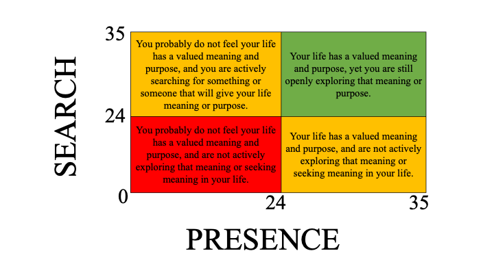

2 Future Design: Combination of Three Academic Disciplines
2.1 Three research areas
A field that combines three academic disciplines

Experimental Economics: What kind of interventions change behavioral habits and culture?
Environmental Economics: How can we encourage economic activity to be more friendly to nature and the environment?
Future Studies: How people, organizations, and society change by being conscious of the future?

2.2 What is capitalism, where are the challenges?
Most countries in the world engage in competition and economic activities based on capitalism and market principles.
Economic activities that permanently pursue profits (Katsuto Iwai, 2009, 2014)

2.3 How do we deal with capitalism?
- Sustainability
The certainty that humanity, organizations, and society will continue.
- Future possibility
Scope of activities and distribution that future generations can achieve.
2.4 History and evolution of economic activity
2.4.1 Hunter-Gatherer Society (600 ~ 700 thousands years)

2.4.2 Agrarian Society (20 thousands years)

2.4.3 Industrial Society (300 years)

Inequality in industrial society: Various disparities and the importance of capital During just 300 years of industrial society Non-linear and explosive growth
2.4.4 Post-Industrial Society
How long this society will continue?
2.4.5 Brainstorming
Homo Sapiens (modern humans) and Homo Neanderthal are two similar species. Homo Sapiens are surviving even in modern days, however Homo Neanderthal got extinct over the period of time. Although Homo Neanderthal are much stronger than Homo Sapiens, why they got extinct?
Below is the profile of Homo Neanderthal:
Source: https://www.nationalgeographic.com/history/article/who-were-the-neanderthals
- Species: Homo neanderthalensis
- Lived: from about 400,000 to 40,000 years ago
- Where: across Europe and southwest and central Asia
- Appearance: large nose, strong double-arched brow ridge, relatively short and stocky bodies
- Brain size: at least 1,200 cm3 to 1,750 cm3
- Height: about 1.50-1.75m
- Weight: about 64-82kg
- Diet: meat, plants and fungi, shellfish when available
- Species named in: 1864 - Name meaning: ‘human from the Neander Valley’
2.5 Quiz 2: Calculate your Meaning in Life score
2.5.1 INSTRUCTIONS FOR SCORING
2.5.1.1 For the Presence sub-scale:
Sum up your scores for items 1, 4, 5, 6 and 9.
Note:
- Item 1, 4, 5 and 6 are normally scored:
A = 1, B = 2, C = 3, D = 4, E = 5, F = 6, G = 7
- Item 9 is reverse scored:
A = 7, B = 6, C = 5, D = 4, E = 3, F = 2, G = 1
Your PRESENCE sub-scale score:……..
2.5.1.2 For the Search sub-scale:
Sum up your scores for items 2, 3, 7, 8 and 10.
Note:
- Item 2, 3, 7, 8 and 10 are normally scored:
A = 1, B = 2, C = 3, D = 4, E = 5, F = 6, G = 7
Your SEARCH sub-scale score:……..
2.5.2 INTERPRETATION OF SCORES

2.5.2.1 If you scored above 24 on PRESENCE and above 24 on SEARCH:
o You feel your life has a valued meaning and purpose, yet you are still openly exploring that meaning or purpose.
o You are likely satisfied with your life, generally optimistic, experience feelings of love frequently, and rarely feel depressed or anxious.
2.5.2.2 If you scored above 24 on PRESENCE and below 24 on SEARCH:
o You feel your life has a valued meaning and purpose, and are not actively exploring that meaning or seeking meaning in your life.
o You are probably highly satisfied with your life, optimistic, and have a healthy self-esteem.
o You frequently experience feelings of love and joy, and rarely feel afraid, angry, ashamed, or sad.
2.5.2.3 If you scored below 24 on PRESENCE and above 24 on SEARCH:
o You probably do not feel your life has a valued meaning and purpose, and you are actively searching for something or someone that will give your life meaning or purpose.
o You may feel lost in life, and this idea may cause you distress.
o You are probably not always satisfied with your life.
o You may not experience emotions like love and joy that often.
2.5.2.4 If you scored below 24 on PRESENCE and below 24 on SEARCH:
o You probably do not feel your life has a valued meaning and purpose, and are not actively exploring that meaning or seeking meaning in your life.
o You may not always be satisfied with your life, or yourself, and you might not be particularly optimistic about the future.
o You may not experience emotions like love and joy that often.
Copyright@2023 Research Institute for Future Design